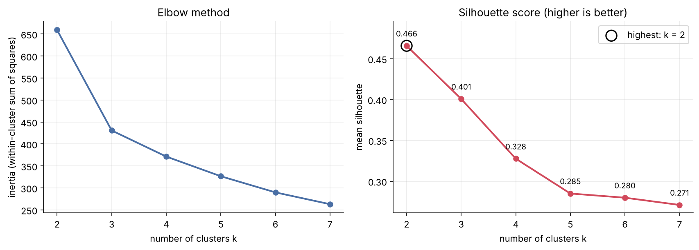
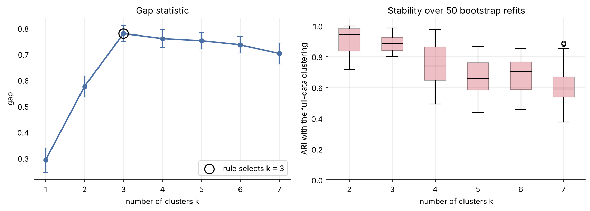
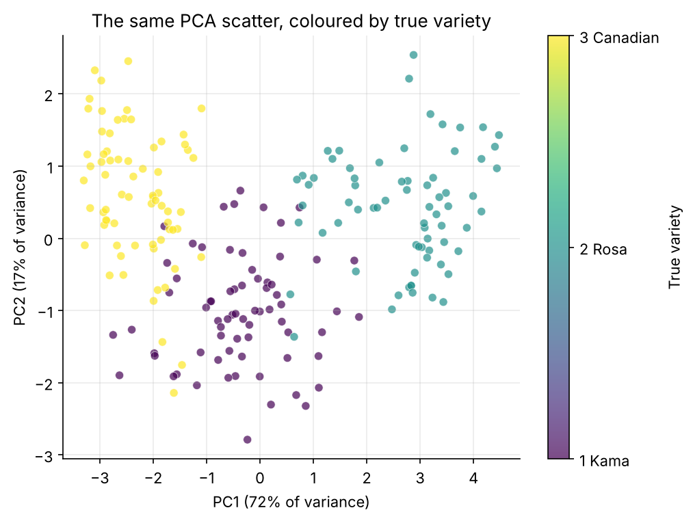
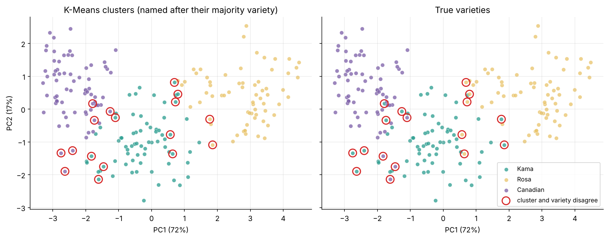
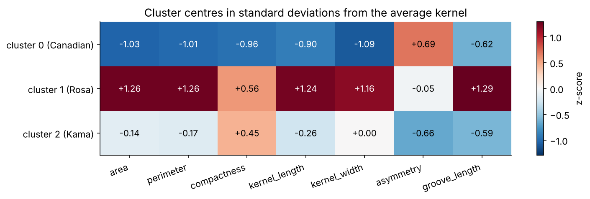
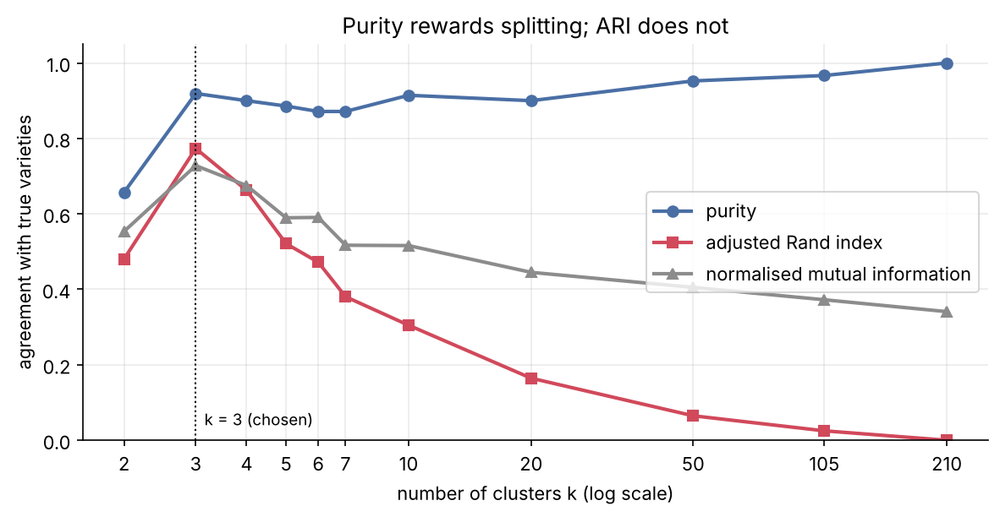

An agricultural co-op receives unlabelled deliveries of mixed wheat. I hid the variety of 210 kernels and asked how many varieties K-Means could find from seven X-ray measurements, and how cleanly it could separate them. The labels came back only at the end, as an answer key.
Short answer: most of it. Three groups emerge without any labels and match the real varieties for about 11 kernels in 12. The boundaries are soft: every misplaced kernel involves Kama, the variety that sits between the other two.
Before paying for a sorting process, the co-op wants to know how many wheat varieties are plausibly mixed in a delivery, and whether a few cheap measurements are enough to tell them apart. The deliveries carry no labels, so this is a clustering problem: find the groups first, then judge how real they are.
Central question. How much of the real class structure can clustering recover without ever using the labels?
The Seeds data set (UCI Machine Learning Repository, Charytanowicz et al., 2010) holds 70 kernels each of Kama, Rosa and Canadian wheat, grown on experimental fields at the Institute of Agrophysics in Lublin. Each kernel was imaged with soft X-rays and measured from the image. There are no missing values.
| Feature | What it measures | Range |
|---|---|---|
area | Size of the outline | 10.6–21.2 |
perimeter | Length of the outline | 12.4–17.3 |
compactness | How close the outline is to a circle | 0.808–0.918 |
kernel_length | Long axis | 4.90–6.68 |
kernel_width | Short axis | 2.63–4.03 |
asymmetry | Asymmetry coefficient | 0.77–8.46 |
groove_length | Length of the groove | 4.52–6.55 |
StandardScaler puts every feature on the same footing, so area (around 15) cannot outweigh compactness (around 0.87) in the distances.n_init=10, random_state=42, on all seven scaled features.The elbow bends sharply at k = 3, but the silhouette is highest at k = 2. At k = 2, K-Means only cuts the data into a group of 133 and a group of 77, merging two neighbouring groups. The gap statistic selects 3, and bootstrap refits show three clusters are about as reproducible as two, while four or more fall apart. I chose k = 3 before looking at any label.
| k | Inertia | Drop from k−1 | Silhouette | Gap | Bootstrap ARI, mean | Bootstrap ARI, 5th pct |
|---|---|---|---|---|---|---|
| 2 | 659.2 | – | 0.466 | 0.575 | 0.920 | 0.774 |
| 3 | 430.7 | 228.5 | 0.401 | 0.779 | 0.879 | 0.800 |
| 4 | 371.3 | 59.4 | 0.328 | 0.759 | 0.745 | 0.518 |
| 5 | 326.5 | 44.8 | 0.285 | 0.751 | 0.663 | 0.461 |
| 6 | 289.8 | 36.7 | 0.280 | 0.735 | 0.673 | 0.481 |
| 7 | 263.0 | 26.8 | 0.271 | 0.702 | 0.611 | 0.435 |


Revealing the labels only now, the cross-tabulation shows a strong diagonal. Purity is 193 of 210 kernels, or 0.919. Rosa and Canadian are never mixed with each other; every one of the 17 mismatches involves Kama.
| Kama | Rosa | Canadian | |
|---|---|---|---|
| cluster 0 | 6 | 0 | 66 |
| cluster 1 | 2 | 65 | 0 |
| cluster 2 | 62 | 5 | 4 |
The hardest pair to tell apart is Kama and Canadian, with 10 kernels swapped between them, followed by Kama and Rosa with 7. Chance-corrected scores confirm the agreement is far above chance: ARI 0.773 and NMI 0.728.

For each kernel I measured its margin: how much closer its nearest cluster centre is than the second nearest. The 17 mismatched kernels have a median margin of 0.41, against 1.94 for the rest, and 11 of them are among the 15% of kernels with the smallest margins. Small or asymmetric Kama kernels drift to Canadian; large ones to Rosa.

A practical rule follows for the co-op: accept confident assignments and send low-margin kernels for a manual check.
| Cluster | Majority | Typical kernel | Area | Compactness | Asymmetry |
|---|---|---|---|---|---|
| 1 | Rosa | Large: 1.2 to 1.3 SD above average on every size measure | 18.50 | 0.884 | 3.63 |
| 2 | Kama | Medium, compact, low asymmetry, short groove | 14.44 | 0.882 | 2.71 |
| 0 | Canadian | Small, narrow, least compact, most asymmetric | 11.86 | 0.848 | 4.74 |

Two more checks point the same way. Other algorithms with different assumptions find much the same three groups, and K-Means returns the identical partition from 25 different random seeds (ARI 1.000 with my clustering every time).
| Method, k = 3 | Purity | ARI vs varieties | ARI vs my K-Means |
|---|---|---|---|
| K-Means (used in the project) | 0.919 | 0.773 | 1.000 |
| Agglomerative, Ward linkage | 0.929 | 0.797 | 0.836 |
| Gaussian mixture, full covariance | 0.895 | 0.723 | 0.777 |
Purity on its own would mislead. It rises towards 1.0 as the kernels are cut into more and more clusters, reaching 1.000 at one kernel per cluster, while ARI peaks at k = 3 and falls to zero.

Without labels, K-Means recovered most of the variety structure: three groups with clear physical meaning, matching the real varieties for about 92% of kernels. Rosa stands out mainly by size. Kama and Canadian differ in shape, through compactness and asymmetry, as much as in size.
Ethics. K-Means always returns k groups, real or not. Treating these clusters as definite varieties would mislabel about 8% of kernels, and every error involves Kama, so decisions built on them would be less reliable for one variety. A fair claim is that the measurements are consistent with about three varieties, separable for roughly 11 kernels in 12, to be confirmed on a labelled sample.
Final_Project_Option3_Seeds_Clustering.ipynb, README.md, data/seeds.csv and figures/ in the project repository.pip install -r requirements.txt jupyter notebook Final_Project_Option3_Seeds_Clustering.ipynb # Run All, about 20 s
Every random step uses random_state=42, so a fresh run reproduces every number on this page. Last run with Python 3.13, scikit-learn 1.9, pandas 3.0 and NumPy 2.5.
Charytanowicz, M. et al. (2010). Complete gradient clustering algorithm for features analysis of X-ray images. Information Technologies in Biomedicine. Seeds data set, UCI Machine Learning Repository, doi:10.24432/C5H30K. Tibshirani, R., Walther, G. & Hastie, T. (2001). Estimating the number of clusters in a data set via the gap statistic. JRSS B, 63(2), 411–423.